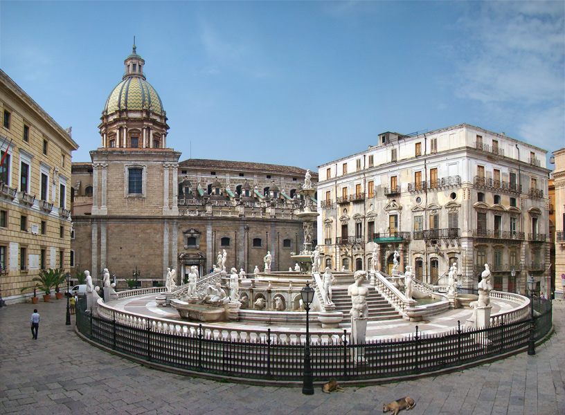

Palermo — Il fascino rinascimentale nel cuore del capoluogo siciliano.
Conosciuta anche come "Piazza della Vergogna", questo spazio urbano è uno dei luoghi più celebri e fotografati della Sicilia, racchiuso tra capolavori architettonici e dominato dalla sua monumentale fontana.

Vero fulcro della piazza, la fontana fu realizzata a Firenze da Francesco Camilliani nel 1554 e successivamente acquistata dal Senato palermitano. È composta da oltre quaranta statue di marmo che raffigurano divinità mitologiche, allegorie di fiumi e mostri marini.
Il soprannome popolare deriva dalla nudità esibita delle statue della fontana, che scosse profondamente il senso del pudore della Palermo settecentesca e ottocentesca, in particolare delle monache di clausura del vicino convento di Santa Caterina.
Il lato meridionale della piazza è occupato dal Palazzo Pretorio (noto anche come Palazzo delle Aquile), storico fulcro del potere civico e oggi sede del Comune di Palermo. Al suo interno custodisce raffinate sale decorate e testimonianze storiche della città.
A delimitare lo spazio scenografico della piazza contribuiscono la maestosa facciata della Chiesa di Santa Caterina d'Alessandria e i prospetti di Palazzo Bonocore e Palazzo Bordonaro, che creano un suggestivo contrasto geometrico con la pianta circolare della fontana.